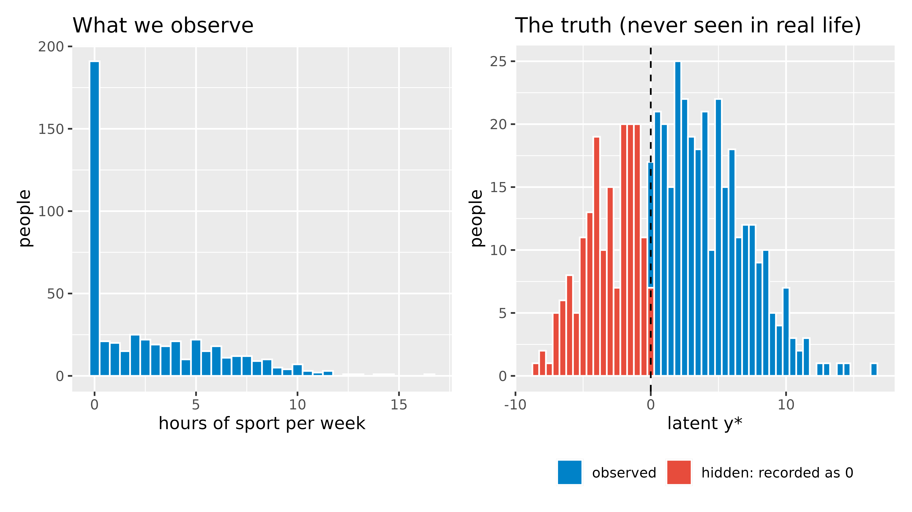
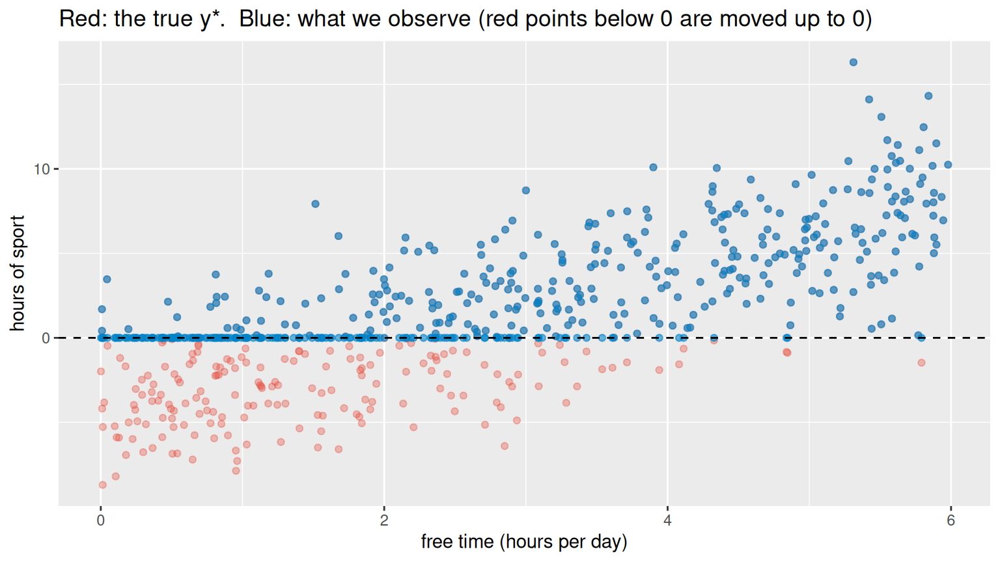
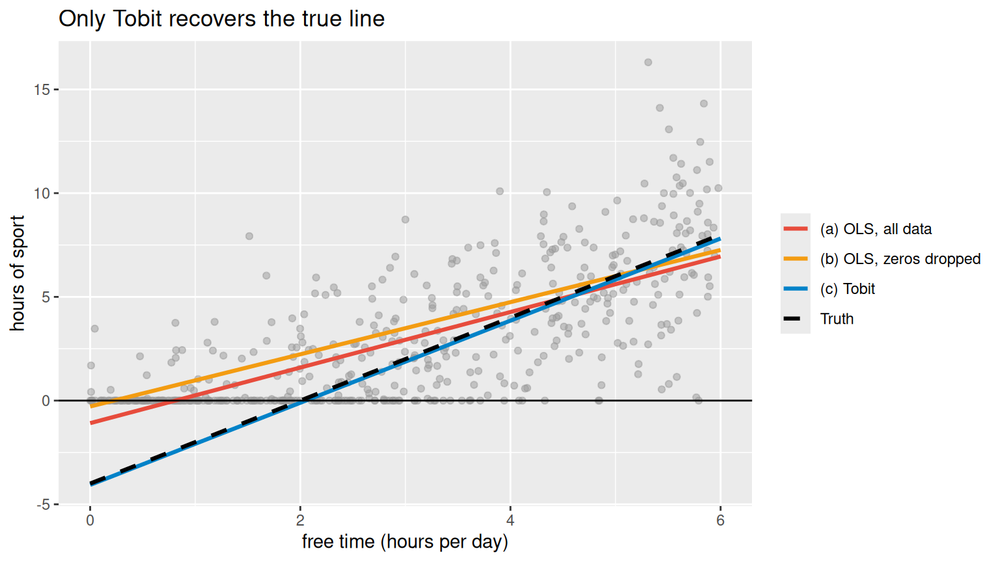
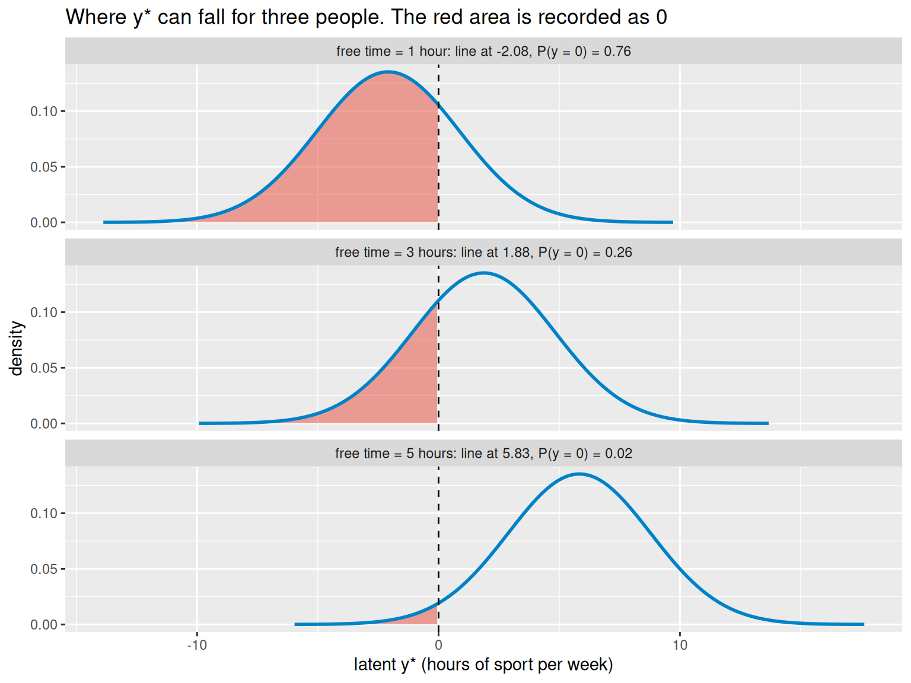
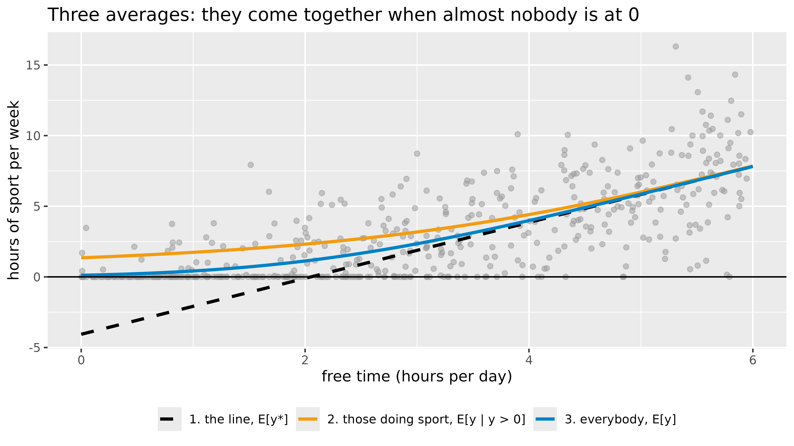
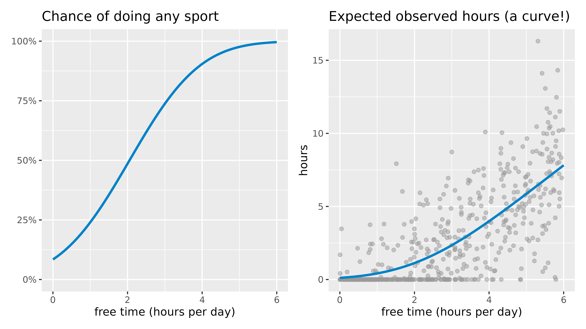

Code
library(survival) # survreg(): fits the Tobit model (comes with R)
library(ggplot2)
library(patchwork) # put plots side by sideImagine we ask 500 people how many hours per week they spend on sport. Many answer 0. Not because they all have exactly the same “zero” interest in sport: some are almost ready to start, others would never do it. We only see 0, because hours cannot go below 0.
This is called a censored outcome: below a limit (here 0) we do not see the true value, only the limit itself.
A Tobit model assumes there is an unobserved (latent) variable \(y^*\), the person’s “desire” for sport, that follows an ordinary linear regression:
\[y^* = \beta_0 + \beta_1 x + \varepsilon, \qquad \varepsilon \sim N(0, \sigma^2)\]
and what we observe is
\[y = \begin{cases} y^* & \text{if } y^* > 0 \\ 0 & \text{if } y^* \le 0 \end{cases}\]
To see why we need it, we simulate data where we know the true answer, and compare three methods.
The true model: every extra hour of free time per day adds 2 hours of sport per week (\(\beta_1 = 2\)), starting from \(-4\) (\(\beta_0 = -4\)), with noise \(\sigma = 3\).
set.seed(42)
n <- 500
free_time <- runif(n, 0, 6) # hours of free time per day
latent <- -4 + 2 * free_time + rnorm(n, sd = 3) # y*: the true "desire" (can be negative)
hours <- pmax(latent, 0) # y: what we observe (never below 0)
df <- data.frame(free_time, latent, hours, censored = latent <= 0)
mean(df$censored) # share of people we see as 0[1] 0.362About a third of the people are recorded as exactly 0.
p1 <- ggplot(df, aes(hours)) +
geom_histogram(binwidth = 0.5, fill = "#0082c8", colour = "white") +
labs(title = "What we observe", x = "hours of sport per week", y = "people")
p2 <- ggplot(df, aes(latent, fill = censored)) +
geom_histogram(binwidth = 0.5, colour = "white") +
geom_vline(xintercept = 0, linetype = "dashed") +
scale_fill_manual(values = c(`FALSE` = "#0082c8", `TRUE` = "#E74C3C"),
labels = c("observed", "hidden: recorded as 0")) +
labs(title = "The truth (never seen in real life)", x = "latent y*", y = "people", fill = NULL) +
theme(legend.position = "bottom")
p1 + p2
Left: the big bar at 0 is the pile-up. Right: behind that bar are many different negative values (red), all squeezed into a single 0.
ggplot(df, aes(free_time)) +
geom_point(aes(y = latent), colour = "#E74C3C", alpha = 0.35, size = 1.5) +
geom_point(aes(y = hours), colour = "#0082c8", alpha = 0.6, size = 1.5) +
geom_hline(yintercept = 0, linetype = "dashed") +
labs(title = "Red: the true y*. Blue: what we observe (red points below 0 are moved up to 0)",
x = "free time (hours per day)", y = "hours of sport")
Call:
survreg(formula = Surv(hours, hours > 0, type = "left") ~ free_time,
data = df, dist = "gaussian")
Value Std. Error z p
(Intercept) -4.0633 0.3514 -11.6 <2e-16
free_time 1.9795 0.0923 21.4 <2e-16
Log(scale) 1.0818 0.0410 26.4 <2e-16
Scale= 2.95
Gaussian distribution
Loglik(model)= -896.3 Loglik(intercept only)= -1095.5
Chisq= 398.29 on 1 degrees of freedom, p= 1.3e-88
Number of Newton-Raphson Iterations: 6
n= 500 Surv(hours, hours > 0, type = "left") tells R: “hours is the value, it is a real observation when hours > 0, and otherwise it is left-censored (the true value is somewhere at or below 0).” With dist = "gaussian" this is exactly the Tobit model. (AER::tobit(hours ~ free_time, left = 0) gives the same result with a shorter call.)
The output of summary(tobit) above, part by part. The coefficient table is also available as numbers, which we use below:
Value Std. Error z p
(Intercept) -4.063 0.35140 -11.56 6.249e-31
free_time 1.980 0.09227 21.45 4.135e-102
Log(scale) 1.082 0.04101 26.38 2.418e-153The coefficient table. Each row is one parameter:
| Column | Meaning | Here, for free_time |
|---|---|---|
Value |
The estimate \(b\): the change in the latent \(y^*\) for one unit more of the predictor | 1.98: one more hour of free time per day raises the latent amount of sport by about 2 hours per week |
Std. Error |
How uncertain the estimate is; smaller is more precise | 0.09 |
z |
Value / Std. Error: how many standard errors the estimate is away from 0 |
1.9795 / 0.0923 = 21.45 |
p |
The chance of a z this large if the true effect were 0. <2e-16 means smaller than 0.0000000000000002: report it as p < .001 |
<2e-16 |
(Intercept) (-4.06) is the predicted latent value for someone with 0 hours of free time. It is below 0, which means such a person is predicted to do no sport at all. It is not a prediction of observed hours, which can never be negative.Log(scale) is the logarithm of \(\sigma\), the standard deviation of the errors. Its z and p test whether \(\sigma = 1\), which is not an interesting question: ignore them.Scale= is \(\sigma\) itself (2.95; the true value in our simulation is 3). It is the spread of \(y^*\) around the regression line, and it is needed for the formulas in section 4.Gaussian distribution confirms that the errors are assumed normal, which is what makes this a Tobit model.Loglik(model) and Loglik(intercept only) measure how well the model with and without free_time fits the data (higher, i.e. closer to 0, is better).Chisq= ... on 1 degrees of freedom, p= ... is the likelihood-ratio test: twice the difference of the two log-likelihoods, \(2 \times (-896.3 - (-1095.5)) = 398.29\). It tests whether the predictors together improve the model; the degrees of freedom are the number of predictors.Number of Newton-Raphson Iterations is technical: the estimation converged after that many steps. If R warns that it did not converge, do not trust the results.n= counts all participants, the censored ones too: Tobit uses them, which is the whole point.Two things are not in the output. There is no \(R^2\): Tobit is fitted by maximum likelihood, so use the likelihood-ratio test to judge the model. And the coefficients are effects on the latent \(y^*\), not on the observed hours; for those, see sections 4 and 5.
method intercept slope
1 Truth -4.00 2.00
2 (a) OLS, all data -1.09 1.34
3 (b) OLS, zeros dropped -0.28 1.26
4 (c) Tobit -4.06 1.98grid <- data.frame(free_time = seq(0, 6, length.out = 100))
lines <- rbind(
data.frame(grid, y = -4 + 2 * grid$free_time, method = "Truth"),
data.frame(grid, y = predict(ols_all, grid), method = "(a) OLS, all data"),
data.frame(grid, y = predict(ols_pos, grid), method = "(b) OLS, zeros dropped"),
data.frame(grid, y = predict(tobit, grid), method = "(c) Tobit")
)
ggplot(df, aes(free_time, hours)) +
geom_point(colour = "grey60", alpha = 0.5, size = 1.5) +
geom_line(data = lines, aes(y = y, colour = method, linetype = method), linewidth = 1.1) +
scale_colour_manual(values = c("Truth" = "black", "(a) OLS, all data" = "#E74C3C",
"(b) OLS, zeros dropped" = "#f39c12", "(c) Tobit" = "#0082c8")) +
scale_linetype_manual(values = c("Truth" = "dashed", "(a) OLS, all data" = "solid",
"(b) OLS, zeros dropped" = "solid", "(c) Tobit" = "solid")) +
geom_hline(yintercept = 0) +
labs(title = "Only Tobit recovers the true line", x = "free time (hours per day)",
y = "hours of sport", colour = NULL, linetype = NULL)
Two functions of the normal (bell) curve appear in every formula below:
dnorm(z).pnorm(z). For example \(\Phi(0) = 0.5\) and \(\Phi(1.96) = 0.975\).At its heart, the Tobit model is the straight line from school, \(y = ax + b\). Statistics books write it as
\[y^* = \beta_0 + \beta_1 x\]
[1] 1.875369For a person with \(x = 3\) hours of free time:
\[y^* = -4.06 + 1.98 \times 3 = 1.88\]
What makes Tobit different from ordinary regression is steps 2 and 3.
\[y^* = \beta_0 + \beta_1 x + \varepsilon, \qquad \varepsilon \sim N(0, \sigma^2)\]
Two people with the same free time do not want the same amount of sport. \(\varepsilon\) (“epsilon”) is how far each person is from the line. It is normally distributed around 0 with standard deviation \(\sigma\) = 2.95, so about two thirds of the people are within \(\pm\) 2.95 hours of the line, and about 95% within \(\pm 2\sigma\).
\[y = \max(0,\; y^*)\]
We see \(y^*\) only when it is positive. Everyone whose \(y^*\) falls at or below 0 is recorded as exactly 0.
For a person with free time \(x\), the line is at \(\beta_0 + \beta_1 x\) and \(y^*\) is spread around it with standard deviation \(\sigma\). The chance of falling at or below 0 is the area of that bell curve below 0:
\[P(y = 0 \mid x) = P(y^* \le 0) = \Phi\!\left(\frac{0 - (\beta_0 + \beta_1 x)}{\sigma}\right)\]
In words: how many standard deviations is 0 below the line, and what share of the bell curve lies below that point? Writing \(z = \frac{\beta_0 + \beta_1 x}{\sigma}\) for the height of the line in standard deviations, this is \(\Phi(-z)\), and the chance of doing some sport is \(P(y > 0 \mid x) = \Phi(z)\).
z chance_of_zero
0.6357350 0.2624746 [1] 0.2282609For \(x = 3\): \(z = 1.88 / 2.95 = 0.64\), so \(P(y = 0) = \Phi(-0.64) = 0.26\): about 26% of such people do no sport.
dens <- do.call(rbind, lapply(c(1, 3, 5), function(x) {
mu <- b0 + b1 * x
y <- seq(mu - 4 * sigma, mu + 4 * sigma, length.out = 400)
data.frame(y = y, d = dnorm(y, mu, sigma),
label = sprintf("free time = %d hour%s: line at %.2f, P(y = 0) = %.2f",
x, ifelse(x == 1, "", "s"), mu, pnorm(-mu / sigma)))
}))
ggplot(dens, aes(y, d)) +
geom_area(data = subset(dens, y <= 0), fill = "#E74C3C", alpha = 0.5) +
geom_line(colour = "#0082c8", linewidth = 1) +
geom_vline(xintercept = 0, linetype = "dashed") +
facet_wrap(~label, ncol = 1) +
labs(title = "Where y* can fall for three people. The red area is recorded as 0",
x = "latent y* (hours of sport per week)", y = "density")
The more free time, the further the bell curve moves to the right, and the smaller the red area.
R uses maximum likelihood: it looks for the values that make the data we saw as likely as possible. Every person adds one piece:
dnorm(y, mean = line, sd = sigma).pnorm(-line / sigma).Adding the logarithms of all the pieces gives the log-likelihood:
\[\log L = \sum_{y_i > 0} \log\!\left[\frac{1}{\sigma}\,\phi\!\left(\frac{y_i - \beta_0 - \beta_1 x_i}{\sigma}\right)\right] + \sum_{y_i = 0} \log \Phi\!\left(\frac{-\beta_0 - \beta_1 x_i}{\sigma}\right)\]
R tries values of \(\beta_0\), \(\beta_1\) and \(\sigma\) until \(\log L\) is as large as possible. With the estimates, our hand calculation gives exactly the Loglik(model) of the output:
line_i <- b0 + b1 * df$free_time # the line for every person
pos <- df$hours > 0
loglik_by_hand <- sum(log(dnorm(df$hours[pos], mean = line_i[pos], sd = sigma))) + # people above 0: heights
sum(log(pnorm(-line_i[!pos] / sigma))) # people at 0: areas
c(by_hand = loglik_by_hand, from_R = tobit$loglik[2]) by_hand from_R
-896.3469 -896.3469 Ordinary regression (OLS) instead treats every 0 as an exact value of 0, the first kind of piece, which is why its line comes out too flat.
For people with free time \(x\), with \(z = \frac{\beta_0 + \beta_1 x}{\sigma}\) as before, there are three different average amounts of sport:
line among_those_doing_sport everybody
1.88 3.18 2.34 among_those_doing_sport everybody
3.05 2.36 x <- seq(0, 6, length.out = 200)
zx <- (b0 + b1 * x) / sigma
curves <- rbind(
data.frame(free_time = x, y = b0 + b1 * x, what = "1. the line, E[y*]"),
data.frame(free_time = x, y = b0 + b1 * x + sigma * dnorm(zx) / pnorm(zx), what = "2. those doing sport, E[y | y > 0]"),
data.frame(free_time = x, y = pnorm(zx) * (b0 + b1 * x) + sigma * dnorm(zx), what = "3. everybody, E[y]"))
ggplot(df, aes(free_time, hours)) +
geom_point(colour = "grey60", alpha = 0.5, size = 1.5) +
geom_line(data = curves, aes(y = y, colour = what, linetype = what), linewidth = 1.1) +
geom_hline(yintercept = 0) +
scale_colour_manual(values = c("black", "#f39c12", "#0082c8")) +
scale_linetype_manual(values = c("dashed", "solid", "solid")) +
labs(title = "Three averages: they come together when almost nobody is at 0",
x = "free time (hours per day)", y = "hours of sport per week", colour = NULL, linetype = NULL) +
theme(legend.position = "bottom")
The effect is the slope of each “average” from step 6:
The average marginal effect is the second one, averaged over all \(n\) people: \(\text{AME} = \beta_1 \cdot \frac{1}{n}\sum_{i=1}^{n} \Phi(z_i)\).
me_line <- b1 # effect on y*
me_hours <- b1 * pnorm(z0) # effect on the observed hours, at x = 3
me_prob <- b1 / sigma * dnorm(z0) # effect on the chance of doing any sport, at x = 3
ame_hand <- b1 * mean(pnorm(line_i / sigma)) # effect on the observed hours, averaged over everybody
round(c(on_y_star = me_line, on_hours_at_3 = me_hours, on_chance_at_3 = me_prob, average_on_hours = ame_hand), 3) on_y_star on_hours_at_3 on_chance_at_3 average_on_hours
1.980 1.460 0.219 1.257 For a person with 3 hours of free time, one more hour adds \(1.98 \times 0.74 = 1.46\) hours of sport and raises the chance of doing any sport by about 22 percentage points. Averaged over everybody, it adds 1.26 hours: the same number as in section 5.
| Quantity | Formula | R |
|---|---|---|
| The line (the \(ax + b\)) | \(\beta_0 + \beta_1 x\) | b0 + b1 * x |
| The line in standard deviations | \(z = (\beta_0 + \beta_1 x) / \sigma\) | z <- (b0 + b1 * x) / sigma |
| Chance of being at 0 | \(\Phi(-z)\) | pnorm(-z) |
| Chance of being above 0 | \(\Phi(z)\) | pnorm(z) |
| Average among those above 0 | \((\beta_0 + \beta_1 x) + \sigma\,\phi(z) / \Phi(z)\) | b0 + b1 * x + sigma * dnorm(z) / pnorm(z) |
| Average among everybody | \(\Phi(z)(\beta_0 + \beta_1 x) + \sigma\,\phi(z)\) | pnorm(z) * (b0 + b1 * x) + sigma * dnorm(z) |
| Effect on \(y^*\) | \(\beta_1\) | b1 |
| Effect on the observed \(y\) | \(\beta_1\,\Phi(z)\) | b1 * pnorm(z) |
| Effect on the chance of being above 0 | \(\beta_1\,\phi(z) / \sigma\) | b1 / sigma * dnorm(z) |
The Tobit slope (1.98) is the effect on the latent \(y^*\): one more hour of free time raises the desire for sport by about 2 hours. But often we want the effect on what we actually see. Two useful quantities (here \(X\beta\) is short for the line \(\beta_0 + \beta_1 x\) of section 4):
sigma <- tobit$scale
xb <- predict(tobit, grid) # X * beta, the latent prediction
grid$p_any <- pnorm(xb / sigma)
grid$e_hours <- pnorm(xb / sigma) * xb + sigma * dnorm(xb / sigma)
p3 <- ggplot(grid, aes(free_time, p_any)) +
geom_line(colour = "#0082c8", linewidth = 1.1) +
scale_y_continuous(labels = scales::percent, limits = c(0, 1)) +
labs(title = "Chance of doing any sport", x = "free time (hours per day)", y = NULL)
p4 <- ggplot(df, aes(free_time, hours)) +
geom_point(colour = "grey60", alpha = 0.5, size = 1.5) +
geom_line(data = grid, aes(y = e_hours), colour = "#0082c8", linewidth = 1.1) +
labs(title = "Expected observed hours (a curve!)", x = "free time (hours per day)", y = "hours")
p3 + p4
The expected observed hours is a curve, flat near 0 (most people do nothing anyway) and close to the latent line for people with lots of free time. So the effect of one more hour of free time depends on where you are:
# average marginal effect on the observed hours: beta * P(y > 0), averaged over the people in the data
xb_people <- predict(tobit, df)
ame <- unname(coef(tobit)["free_time"]) * mean(pnorm(xb_people / sigma))
round(c(latent_effect = unname(coef(tobit)["free_time"]), effect_on_observed_hours = ame), 2) latent_effect effect_on_observed_hours
1.98 1.26 On average, one more hour of free time adds about 1.26 hours of observed sport, less than the latent effect, because for some people it is not enough to start doing sport at all.
The censReg package fits the same Tobit model and computes marginal effects for us (install.packages("censReg")):
(Intercept) free_time logSigma
-4.063264 1.979544 1.081779 margEff() gives the effect on the observed hours. Careful: by default it is the effect for a person with average free time (2.9 hours), not the average over all people:
Marg. Eff. Std. Error t value Pr(>|t|)
free_time 1.432509 0.065628 21.828 < 2.2e-16 ***
---
Signif. codes: 0 '***' 0.001 '**' 0.01 '*' 0.05 '.' 0.1 ' ' 1Read this like the coefficient table: Marg. Eff. is the effect on the observed hours, Std. Error its uncertainty, and t value and Pr(>|t|) test whether it differs from 0.
To get the average marginal effect, compute the effect for each person and take the mean. It matches the value we calculated by hand above:
at_average_person average_over_people by_hand
1.43 1.26 1.26 The two differ because the effect is not the same for everyone: it is small for people with little free time (most of them do no sport anyway) and close to 1.98 for people with a lot. The effect at the average person is not the average of the effects.
A psychology report (APA 7th edition) needs the reason for using Tobit, the estimates with their uncertainty, the model test, and what the effect means on the observed scale. We collect the numbers from the R objects, so the text below always matches the results:
n <- nrow(df)
n_cens <- sum(df$hours == 0) # participants at the limit
se <- s[, "Std. Error"]
ci_low <- s[, "Value"] - qnorm(0.975) * se # 95% confidence interval
ci_high <- s[, "Value"] + qnorm(0.975) * se
lr <- 2 * diff(tobit$loglik) # likelihood-ratio test
lr_p <- pchisq(lr, df = 1, lower.tail = FALSE)
mem <- summary(margEff(m)) # effect at the average person
# APA number formats: 2 decimals, p without a leading zero, "< .001" for tiny p
f2 <- function(x) formatC(x, format = "f", digits = 2)
pval <- function(p) if (p < .001) "< .001" else paste("=", sub("^0", "", formatC(p, format = "f", digits = 3)))Method (data analysis):
Because 181 of the 500 participants (36.2%) reported no sport at all, weekly hours of sport were left-censored at zero. We therefore analysed them with a Tobit (censored) regression, which treats these zeros as values at or below the censoring point rather than as true zeros. Analyses were conducted in R (Version 4.6.1; R Core Team, 2026) with the survival and censReg packages.
Results:
More daily free time predicted more weekly sport, b = 1.98, SE = 0.09, z = 21.45, p < .001, 95% CI [1.80, 2.16], and the model fitted the data better than an intercept-only model, χ²(1) = 398.29, p < .001. The coefficient refers to the latent (uncensored) amount of sport: each additional hour of free time per day was associated with about 2 more hours of sport per week. On the observed scale, the average marginal effect was 1.26: averaged across participants, one more hour of free time per day was associated with 1.26 more hours of sport per week. For a participant with average free time (M = 2.94 hours), the effect was 1.43, SE = 0.07, 95% CI [1.30, 1.56].
Table 1
Tobit Regression Predicting Weekly Hours of Sport From Daily Free Time
| Predictor | b | SE | z | p | 95% CI |
|---|---|---|---|---|---|
| Intercept | -4.06 | 0.35 | -11.56 | < .001 | [-4.75, -3.37] |
| Free time (hours/day) | 1.98 | 0.09 | 21.45 | < .001 | [1.80, 2.16] |
Note. N = 500; 181 observations (36.2%) were left-censored at 0. σ = 2.95. Likelihood-ratio test against the intercept-only model: χ²(1) = 398.29, p < .001. Coefficients are effects on the latent outcome.
Points to remember:
citation() and citation("survival") in R give the exact references.| When | The outcome has a pile-up at a limit (0, a maximum score, a detection limit) because values beyond it cannot be recorded |
| Why not OLS | It treats the pile-up as real values and gives a biased, usually too flat, slope |
| Why not drop the zeros | The remaining sample is selected, which also biases the slope |
| How (R) | survreg(Surv(y, y > lower, type = "left") ~ x, dist = "gaussian") or AER::tobit(y ~ x, left = 0) |
| Interpretation | Coefficients are effects on the latent \(y^*\); compute marginal effects for the observed \(y\) (censReg::margEff()), and say whether it is at the average person or averaged over people |
| Assumptions | Normal errors with constant variance; one process decides both whether and how much |
| If the last assumption fails | e.g. people decide separately whether to do sport and how much: use a two-part (hurdle) model |
Amemiya, T. (1984). Tobit models: A survey. Journal of Econometrics, 24(1–2), 3–61.
Henningsen, A. (2026). censReg: Censored regression (Tobit) models (R package version 0.5-40). https://CRAN.R-project.org/package=censReg
McDonald, J. F., & Moffitt, R. A. (1980). The uses of Tobit analysis. The Review of Economics and Statistics, 62(2), 318–321.
Therneau, T. (2026). A package for survival analysis in R (R package version 3.8-12). https://CRAN.R-project.org/package=survival
Tobin, J. (1958). Estimation of relationships for limited dependent variables. Econometrica, 26(1), 24–36.
---
title: "Tobit Regression: A Worked Example"
author: ""
output:
html_document:
css: styles.css
theme: flatly
highlight: tango
toc: true
toc_float: true
code_folding: show
self_contained: true
vignette: "%\\VignetteIndexEntry{Tobit Regression} %\\VignetteEngine{knitr::rmarkdown} %\\VignetteEncoding{UTF-8}\n"
---
```{r options, echo=FALSE, warning=FALSE, message=FALSE}
directory<-if (rstudioapi::isAvailable()) paste0(dirname(rstudioapi::getActiveDocumentContext()$path),"/") else ""
source(paste0(directory, "R/code_options.R"))
source(paste0(directory, "R/code_rwf.R"))
# wider, shorter figures than the site default; no knitr cache: the page runs in
# seconds, and cached chunks would not notice an edit to the simulated data
knitr::opts_chunk$set(fig.width = 8, fig.height = 4.5, cache = FALSE)
```
## The problem: a pile of zeros
Imagine we ask 500 people **how many hours per week they spend on sport**. Many answer **0**. Not because they all have exactly the same "zero" interest in sport: some are almost ready to start, others would never do it. We only see 0, because hours cannot go below 0.
This is called a **censored** outcome: below a limit (here 0) we do not see the true value, only the limit itself.
A Tobit model assumes there is an unobserved (**latent**) variable $y^*$, the person's "desire" for sport, that follows an ordinary linear regression:
$$y^* = \beta_0 + \beta_1 x + \varepsilon, \qquad \varepsilon \sim N(0, \sigma^2)$$
and what we observe is
$$y = \begin{cases} y^* & \text{if } y^* > 0 \\ 0 & \text{if } y^* \le 0 \end{cases}$$
To see why we need it, we **simulate** data where we know the true answer, and compare three methods.
```{r packages}
library(survival) # survreg(): fits the Tobit model (comes with R)
library(ggplot2)
library(patchwork) # put plots side by side
```
---
## 1. Simulate the data
The true model: every extra hour of free time per day adds **2 hours** of sport per week ($\beta_1 = 2$), starting from $-4$ ($\beta_0 = -4$), with noise $\sigma = 3$.
```{r simulate}
set.seed(42)
n <- 500
free_time <- runif(n, 0, 6) # hours of free time per day
latent <- -4 + 2 * free_time + rnorm(n, sd = 3) # y*: the true "desire" (can be negative)
hours <- pmax(latent, 0) # y: what we observe (never below 0)
df <- data.frame(free_time, latent, hours, censored = latent <= 0)
mean(df$censored) # share of people we see as 0
```
About a third of the people are recorded as exactly 0.
---
## 2. Look at the data
```{r look}
p1 <- ggplot(df, aes(hours)) +
geom_histogram(binwidth = 0.5, fill = "#0082c8", colour = "white") +
labs(title = "What we observe", x = "hours of sport per week", y = "people")
p2 <- ggplot(df, aes(latent, fill = censored)) +
geom_histogram(binwidth = 0.5, colour = "white") +
geom_vline(xintercept = 0, linetype = "dashed") +
scale_fill_manual(values = c(`FALSE` = "#0082c8", `TRUE` = "#E74C3C"),
labels = c("observed", "hidden: recorded as 0")) +
labs(title = "The truth (never seen in real life)", x = "latent y*", y = "people", fill = NULL) +
theme(legend.position = "bottom")
p1 + p2
```
Left: the big bar at 0 is the **pile-up**. Right: behind that bar are many different negative values (red), all squeezed into a single 0.
```{r scatter}
ggplot(df, aes(free_time)) +
geom_point(aes(y = latent), colour = "#E74C3C", alpha = 0.35, size = 1.5) +
geom_point(aes(y = hours), colour = "#0082c8", alpha = 0.6, size = 1.5) +
geom_hline(yintercept = 0, linetype = "dashed") +
labs(title = "Red: the true y*. Blue: what we observe (red points below 0 are moved up to 0)",
x = "free time (hours per day)", y = "hours of sport")
```
---
## 3. Three ways to fit it
```{r fit}
ols_all <- lm(hours ~ free_time, data = df) # (a) ignore the problem
ols_pos <- lm(hours ~ free_time, data = subset(df, hours > 0)) # (b) drop the zeros
tobit <- survreg(Surv(hours, hours > 0, type = "left") ~ free_time,
data = df, dist = "gaussian") # (c) Tobit
summary(tobit)
```
`Surv(hours, hours > 0, type = "left")` tells R: *"`hours` is the value, it is a real observation when `hours > 0`, and otherwise it is **left-censored** (the true value is somewhere at or below 0)."* With `dist = "gaussian"` this is exactly the Tobit model. (`AER::tobit(hours ~ free_time, left = 0)` gives the same result with a shorter call.)
### How to read the output
The output of `summary(tobit)` above, part by part. The coefficient table is also available as numbers, which we use below:
```{r output_parts}
s <- summary(tobit)$table # Value, Std. Error, z, p for each row
signif(s, 4) # signif, not round: round() would print the tiny p values as 0
```
**The coefficient table.** Each row is one parameter:
| Column | Meaning | Here, for `free_time` |
|---|---|---|
| `Value` | The estimate $b$: the change in the **latent** $y^*$ for one unit more of the predictor | `r round(s["free_time", "Value"], 2)`: one more hour of free time per day raises the latent amount of sport by about `r round(s["free_time", "Value"], 1)` hours per week |
| `Std. Error` | How uncertain the estimate is; smaller is more precise | `r round(s["free_time", "Std. Error"], 2)` |
| `z` | `Value / Std. Error`: how many standard errors the estimate is away from 0 | `r round(s["free_time", "Value"], 4)` / `r round(s["free_time", "Std. Error"], 4)` = `r round(s["free_time", "z"], 2)` |
| `p` | The chance of a `z` this large if the true effect were 0. `<2e-16` means smaller than 0.0000000000000002: report it as *p* < .001 | `r format.pval(s["free_time", "p"], digits = 2)` |
- **`(Intercept)`** (`r round(s["(Intercept)", "Value"], 2)`) is the predicted **latent** value for someone with 0 hours of free time. It is below 0, which means such a person is predicted to do **no** sport at all. It is not a prediction of observed hours, which can never be negative.
- **`Log(scale)`** is the logarithm of $\sigma$, the standard deviation of the errors. Its *z* and *p* test whether $\sigma = 1$, which is not an interesting question: ignore them.
- **`Scale=`** is $\sigma$ itself (`r round(tobit$scale, 2)`; the true value in our simulation is 3). It is the spread of $y^*$ around the regression line, and it is needed for the formulas in section 4.
- **`Gaussian distribution`** confirms that the errors are assumed normal, which is what makes this a Tobit model.
- **`Loglik(model)`** and **`Loglik(intercept only)`** measure how well the model with and without `free_time` fits the data (higher, i.e. closer to 0, is better).
- **`Chisq= ... on 1 degrees of freedom, p= ...`** is the **likelihood-ratio test**: twice the difference of the two log-likelihoods, $2 \times (`r round(tobit$loglik[2], 1)` - (`r round(tobit$loglik[1], 1)`)) = `r round(2 * diff(tobit$loglik), 2)`$. It tests whether the predictors together improve the model; the degrees of freedom are the number of predictors.
- **`Number of Newton-Raphson Iterations`** is technical: the estimation converged after that many steps. If R warns that it did **not** converge, do not trust the results.
- **`n=`** counts **all** participants, the censored ones too: Tobit uses them, which is the whole point.
Two things are **not** in the output. There is no $R^2$: Tobit is fitted by maximum likelihood, so use the likelihood-ratio test to judge the model. And the coefficients are effects on the latent $y^*$, not on the observed hours; for those, see sections 4 and 5.
```{r compare}
data.frame(
method = c("Truth", "(a) OLS, all data", "(b) OLS, zeros dropped", "(c) Tobit"),
intercept = round(c(-4, coef(ols_all)[1], coef(ols_pos)[1], coef(tobit)[1]), 2),
slope = round(c( 2, coef(ols_all)[2], coef(ols_pos)[2], coef(tobit)[2]), 2)
)
```
```{r lines}
grid <- data.frame(free_time = seq(0, 6, length.out = 100))
lines <- rbind(
data.frame(grid, y = -4 + 2 * grid$free_time, method = "Truth"),
data.frame(grid, y = predict(ols_all, grid), method = "(a) OLS, all data"),
data.frame(grid, y = predict(ols_pos, grid), method = "(b) OLS, zeros dropped"),
data.frame(grid, y = predict(tobit, grid), method = "(c) Tobit")
)
ggplot(df, aes(free_time, hours)) +
geom_point(colour = "grey60", alpha = 0.5, size = 1.5) +
geom_line(data = lines, aes(y = y, colour = method, linetype = method), linewidth = 1.1) +
scale_colour_manual(values = c("Truth" = "black", "(a) OLS, all data" = "#E74C3C",
"(b) OLS, zeros dropped" = "#f39c12", "(c) Tobit" = "#0082c8")) +
scale_linetype_manual(values = c("Truth" = "dashed", "(a) OLS, all data" = "solid",
"(b) OLS, zeros dropped" = "solid", "(c) Tobit" = "solid")) +
geom_hline(yintercept = 0) +
labs(title = "Only Tobit recovers the true line", x = "free time (hours per day)",
y = "hours of sport", colour = NULL, linetype = NULL)
```
- **(a) OLS on all data** is too **flat**: the zeros pull the left end of the line up, so the effect of free time looks smaller than it is.
- **(b) OLS without the zeros** is also too flat: we kept only people whose noise happened to be high enough, so the sample is no longer random.
- **(c) Tobit** lands on the true line, because it uses the zeros correctly: as "somewhere at or below 0", not as "exactly 0".
---
## 4. The model step by step, with formulas
Two functions of the normal (bell) curve appear in every formula below:
- $\phi(z)$ ("small phi") is the **height** of the standard normal curve at $z$. In R: `dnorm(z)`.
- $\Phi(z)$ ("capital phi") is the **area** under the curve to the left of $z$: the share of a normal population that lies below $z$ standard deviations. In R: `pnorm(z)`. For example $\Phi(0) = 0.5$ and $\Phi(1.96) = 0.975$.
### Step 1: a straight line (yes, $y = ax + b$)
At its heart, the Tobit model is the straight line from school, $y = ax + b$. Statistics books write it as
$$y^* = \beta_0 + \beta_1 x$$
- $\beta_1$ is the $a$: the **slope**, how much the line goes up for one unit more of $x$.
- $\beta_0$ is the $b$: the **intercept**, the height of the line at $x = 0$.
```{r step1}
b0 <- unname(coef(tobit)["(Intercept)"]) # the "b" of y = ax + b
b1 <- unname(coef(tobit)["free_time"]) # the "a": the slope
sigma <- tobit$scale
x0 <- 3 # a person with 3 hours of free time per day
line0 <- b0 + b1 * x0
line0
```
For a person with $x = 3$ hours of free time:
$$y^* = `r round(b0, 2)` + `r round(b1, 2)` \times 3 = `r round(line0, 2)`$$
What makes Tobit different from ordinary regression is steps 2 and 3.
### Step 2: people are scattered around the line
$$y^* = \beta_0 + \beta_1 x + \varepsilon, \qquad \varepsilon \sim N(0, \sigma^2)$$
Two people with the same free time do not want the same amount of sport. $\varepsilon$ ("epsilon") is how far each person is from the line. It is normally distributed around 0 with standard deviation $\sigma$ = `r round(sigma, 2)`, so about two thirds of the people are within $\pm$ `r round(sigma, 2)` hours of the line, and about 95% within $\pm 2\sigma$.
### Step 3: the floor at 0
$$y = \max(0,\; y^*)$$
We see $y^*$ only when it is positive. Everyone whose $y^*$ falls at or below 0 is recorded as exactly 0.
### Step 4: the chance of being at 0
For a person with free time $x$, the line is at $\beta_0 + \beta_1 x$ and $y^*$ is spread around it with standard deviation $\sigma$. The chance of falling at or below 0 is the area of that bell curve below 0:
$$P(y = 0 \mid x) = P(y^* \le 0) = \Phi\!\left(\frac{0 - (\beta_0 + \beta_1 x)}{\sigma}\right)$$
In words: how many standard deviations is 0 below the line, and what share of the bell curve lies below that point? Writing $z = \frac{\beta_0 + \beta_1 x}{\sigma}$ for the height of the line in standard deviations, this is $\Phi(-z)$, and the chance of doing some sport is $P(y > 0 \mid x) = \Phi(z)$.
```{r step4}
z0 <- line0 / sigma # the line at x = 3, in standard deviations
p_zero <- pnorm(-z0) # Φ(-z): the area of the bell curve below 0
c(z = z0, chance_of_zero = p_zero)
near <- abs(df$free_time - x0) < 0.5 # people in the data with 2.5 to 3.5 hours
mean(df$hours[near] == 0) # the share of them who are at 0: close to the formula
```
For $x = 3$: $z = `r round(line0, 2)` / `r round(sigma, 2)` = `r round(z0, 2)`$, so $P(y = 0) = \Phi(`r round(-z0, 2)`) = `r round(p_zero, 2)`$: about `r round(100 * p_zero)`% of such people do no sport.
```{r step4_plot, fig.height = 6}
dens <- do.call(rbind, lapply(c(1, 3, 5), function(x) {
mu <- b0 + b1 * x
y <- seq(mu - 4 * sigma, mu + 4 * sigma, length.out = 400)
data.frame(y = y, d = dnorm(y, mu, sigma),
label = sprintf("free time = %d hour%s: line at %.2f, P(y = 0) = %.2f",
x, ifelse(x == 1, "", "s"), mu, pnorm(-mu / sigma)))
}))
ggplot(dens, aes(y, d)) +
geom_area(data = subset(dens, y <= 0), fill = "#E74C3C", alpha = 0.5) +
geom_line(colour = "#0082c8", linewidth = 1) +
geom_vline(xintercept = 0, linetype = "dashed") +
facet_wrap(~label, ncol = 1) +
labs(title = "Where y* can fall for three people. The red area is recorded as 0",
x = "latent y* (hours of sport per week)", y = "density")
```
The more free time, the further the bell curve moves to the right, and the smaller the red area.
### Step 5: how R finds $\beta_0$, $\beta_1$ and $\sigma$
R uses **maximum likelihood**: it looks for the values that make the data we saw as likely as possible. Every person adds one piece:
- **A person with $y_i > 0$:** we know the exact value, so the piece is the **height** of their bell curve at that value:
$\frac{1}{\sigma}\,\phi\!\left(\frac{y_i - (\beta_0 + \beta_1 x_i)}{\sigma}\right)$, in R `dnorm(y, mean = line, sd = sigma)`.
- **A person with $y_i = 0$:** we only know that $y^* \le 0$, so the piece is the **red area** of their bell curve:
$\Phi\!\left(\frac{-(\beta_0 + \beta_1 x_i)}{\sigma}\right)$, in R `pnorm(-line / sigma)`.
Adding the logarithms of all the pieces gives the **log-likelihood**:
$$\log L = \sum_{y_i > 0} \log\!\left[\frac{1}{\sigma}\,\phi\!\left(\frac{y_i - \beta_0 - \beta_1 x_i}{\sigma}\right)\right] + \sum_{y_i = 0} \log \Phi\!\left(\frac{-\beta_0 - \beta_1 x_i}{\sigma}\right)$$
R tries values of $\beta_0$, $\beta_1$ and $\sigma$ until $\log L$ is as large as possible. With the estimates, our hand calculation gives exactly the `Loglik(model)` of the output:
```{r step5}
line_i <- b0 + b1 * df$free_time # the line for every person
pos <- df$hours > 0
loglik_by_hand <- sum(log(dnorm(df$hours[pos], mean = line_i[pos], sd = sigma))) + # people above 0: heights
sum(log(pnorm(-line_i[!pos] / sigma))) # people at 0: areas
c(by_hand = loglik_by_hand, from_R = tobit$loglik[2])
```
Ordinary regression (OLS) instead treats every 0 as an exact value of 0, the first kind of piece, which is why its line comes out too flat.
### Step 6: three different "averages"
For people with free time $x$, with $z = \frac{\beta_0 + \beta_1 x}{\sigma}$ as before, there are three different average amounts of sport:
1. **The line**, the average of $y^*$ (it can be negative): $E[y^* \mid x] = \beta_0 + \beta_1 x$
2. **Among the people who do some sport**: $E[y \mid y > 0, x] = (\beta_0 + \beta_1 x) + \sigma \, \dfrac{\phi(z)}{\Phi(z)}$. It is above the line, because the people with the lowest $y^*$ have dropped out to 0.
3. **Among everybody, zeros included**: $E[y \mid x] = \Phi(z)\,(\beta_0 + \beta_1 x) + \sigma\,\phi(z)$. This is the chance of doing any sport times the average of those who do: $P(y > 0) \times E[y \mid y > 0]$.
```{r step6}
e_line <- line0
e_positive <- line0 + sigma * dnorm(z0) / pnorm(z0)
e_everybody <- pnorm(z0) * line0 + sigma * dnorm(z0)
round(c(line = e_line, among_those_doing_sport = e_positive, everybody = e_everybody), 2)
# the same in the data, for people with 2.5 to 3.5 hours of free time
round(c(among_those_doing_sport = mean(df$hours[near & df$hours > 0]), everybody = mean(df$hours[near])), 2)
```
```{r step6_plot}
x <- seq(0, 6, length.out = 200)
zx <- (b0 + b1 * x) / sigma
curves <- rbind(
data.frame(free_time = x, y = b0 + b1 * x, what = "1. the line, E[y*]"),
data.frame(free_time = x, y = b0 + b1 * x + sigma * dnorm(zx) / pnorm(zx), what = "2. those doing sport, E[y | y > 0]"),
data.frame(free_time = x, y = pnorm(zx) * (b0 + b1 * x) + sigma * dnorm(zx), what = "3. everybody, E[y]"))
ggplot(df, aes(free_time, hours)) +
geom_point(colour = "grey60", alpha = 0.5, size = 1.5) +
geom_line(data = curves, aes(y = y, colour = what, linetype = what), linewidth = 1.1) +
geom_hline(yintercept = 0) +
scale_colour_manual(values = c("black", "#f39c12", "#0082c8")) +
scale_linetype_manual(values = c("dashed", "solid", "solid")) +
labs(title = "Three averages: they come together when almost nobody is at 0",
x = "free time (hours per day)", y = "hours of sport per week", colour = NULL, linetype = NULL) +
theme(legend.position = "bottom")
```
### Step 7: the effect of one more unit of $x$
The effect is the slope of each "average" from step 6:
- On the latent $y^*$, the slope of the straight line: $\dfrac{\partial E[y^*]}{\partial x} = \beta_1$
- On the observed hours, the slope times the chance of being above 0: $\dfrac{\partial E[y \mid x]}{\partial x} = \beta_1\,\Phi(z)$
- On the chance of doing any sport: $\dfrac{\partial P(y > 0 \mid x)}{\partial x} = \dfrac{\beta_1}{\sigma}\,\phi(z)$
The **average marginal effect** is the second one, averaged over all $n$ people: $\text{AME} = \beta_1 \cdot \frac{1}{n}\sum_{i=1}^{n} \Phi(z_i)$.
```{r step7}
me_line <- b1 # effect on y*
me_hours <- b1 * pnorm(z0) # effect on the observed hours, at x = 3
me_prob <- b1 / sigma * dnorm(z0) # effect on the chance of doing any sport, at x = 3
ame_hand <- b1 * mean(pnorm(line_i / sigma)) # effect on the observed hours, averaged over everybody
round(c(on_y_star = me_line, on_hours_at_3 = me_hours, on_chance_at_3 = me_prob, average_on_hours = ame_hand), 3)
```
For a person with 3 hours of free time, one more hour adds $`r round(b1, 2)` \times `r round(pnorm(z0), 2)` = `r round(me_hours, 2)`$ hours of sport and raises the chance of doing any sport by about `r round(100 * me_prob)` percentage points. Averaged over everybody, it adds `r round(ame_hand, 2)` hours: the same number as in section 5.
### All the formulas at once
| Quantity | Formula | R |
|---|---|---|
| The line (the $ax + b$) | $\beta_0 + \beta_1 x$ | `b0 + b1 * x` |
| The line in standard deviations | $z = (\beta_0 + \beta_1 x) / \sigma$ | `z <- (b0 + b1 * x) / sigma` |
| Chance of being at 0 | $\Phi(-z)$ | `pnorm(-z)` |
| Chance of being above 0 | $\Phi(z)$ | `pnorm(z)` |
| Average among those above 0 | $(\beta_0 + \beta_1 x) + \sigma\,\phi(z) / \Phi(z)$ | `b0 + b1 * x + sigma * dnorm(z) / pnorm(z)` |
| Average among everybody | $\Phi(z)(\beta_0 + \beta_1 x) + \sigma\,\phi(z)$ | `pnorm(z) * (b0 + b1 * x) + sigma * dnorm(z)` |
| Effect on $y^*$ | $\beta_1$ | `b1` |
| Effect on the observed $y$ | $\beta_1\,\Phi(z)$ | `b1 * pnorm(z)` |
| Effect on the chance of being above 0 | $\beta_1\,\phi(z) / \sigma$ | `b1 / sigma * dnorm(z)` |
---
## 5. Interpreting the coefficients
The Tobit slope (`r round(coef(tobit)[2], 2)`) is the effect on the **latent** $y^*$: one more hour of free time raises the *desire* for sport by about 2 hours. But often we want the effect on what we actually see. Two useful quantities (here $X\beta$ is short for the line $\beta_0 + \beta_1 x$ of section 4):
1. **Probability of doing any sport**: $P(y > 0) = \Phi\!\left(\frac{X\beta}{\sigma}\right)$
2. **Expected observed hours**: $E[y] = \Phi\!\left(\frac{X\beta}{\sigma}\right) X\beta + \sigma\, \phi\!\left(\frac{X\beta}{\sigma}\right)$
```{r predictions}
sigma <- tobit$scale
xb <- predict(tobit, grid) # X * beta, the latent prediction
grid$p_any <- pnorm(xb / sigma)
grid$e_hours <- pnorm(xb / sigma) * xb + sigma * dnorm(xb / sigma)
p3 <- ggplot(grid, aes(free_time, p_any)) +
geom_line(colour = "#0082c8", linewidth = 1.1) +
scale_y_continuous(labels = scales::percent, limits = c(0, 1)) +
labs(title = "Chance of doing any sport", x = "free time (hours per day)", y = NULL)
p4 <- ggplot(df, aes(free_time, hours)) +
geom_point(colour = "grey60", alpha = 0.5, size = 1.5) +
geom_line(data = grid, aes(y = e_hours), colour = "#0082c8", linewidth = 1.1) +
labs(title = "Expected observed hours (a curve!)", x = "free time (hours per day)", y = "hours")
p3 + p4
```
The expected observed hours is a **curve**, flat near 0 (most people do nothing anyway) and close to the latent line for people with lots of free time. So the effect of one more hour of free time **depends on where you are**:
```{r marginal}
# average marginal effect on the observed hours: beta * P(y > 0), averaged over the people in the data
xb_people <- predict(tobit, df)
ame <- unname(coef(tobit)["free_time"]) * mean(pnorm(xb_people / sigma))
round(c(latent_effect = unname(coef(tobit)["free_time"]), effect_on_observed_hours = ame), 2)
```
On average, one more hour of free time adds about `r round(ame, 2)` hours of observed sport, less than the latent effect, because for some people it is not enough to start doing sport at all.
### Checking it with a package
The `censReg` package fits the same Tobit model and computes marginal effects for us (`install.packages("censReg")`):
```{r censreg}
library(censReg)
m <- censReg(hours ~ free_time, left = 0, data = df)
coef(m) # same intercept and slope as survreg; logSigma is log(sigma)
```
`margEff()` gives the effect on the observed hours. Careful: by default it is the effect **for a person with average free time** (`r round(mean(df$free_time), 1)` hours), not the average over all people:
```{r margeff}
summary(margEff(m)) # effect at the average free time
```
Read this like the coefficient table: `Marg. Eff.` is the effect on the observed hours, `Std. Error` its uncertainty, and `t value` and `Pr(>|t|)` test whether it differs from 0.
To get the **average marginal effect**, compute the effect for each person and take the mean. It matches the value we calculated by hand above:
```{r margeff_average}
each_person <- sapply(df$free_time, function(x) margEff(m, xValues = c(1, x))) # 1 = the intercept
round(c(at_average_person = unname(margEff(m)), average_over_people = mean(each_person), by_hand = ame), 2)
```
The two differ because the effect is not the same for everyone: it is small for people with little free time (most of them do no sport anyway) and close to `r round(coef(tobit)[2], 2)` for people with a lot. The effect at the average person is not the average of the effects.
---
## 6. Reporting the results in APA style
A psychology report (APA 7th edition) needs the reason for using Tobit, the estimates with their uncertainty, the model test, and what the effect means on the observed scale. We collect the numbers from the R objects, so the text below always matches the results:
```{r apa_numbers}
n <- nrow(df)
n_cens <- sum(df$hours == 0) # participants at the limit
se <- s[, "Std. Error"]
ci_low <- s[, "Value"] - qnorm(0.975) * se # 95% confidence interval
ci_high <- s[, "Value"] + qnorm(0.975) * se
lr <- 2 * diff(tobit$loglik) # likelihood-ratio test
lr_p <- pchisq(lr, df = 1, lower.tail = FALSE)
mem <- summary(margEff(m)) # effect at the average person
# APA number formats: 2 decimals, p without a leading zero, "< .001" for tiny p
f2 <- function(x) formatC(x, format = "f", digits = 2)
pval <- function(p) if (p < .001) "< .001" else paste("=", sub("^0", "", formatC(p, format = "f", digits = 3)))
```
**Method** (data analysis):
> Because `r n_cens` of the `r n` participants (`r formatC(100 * n_cens / n, format = "f", digits = 1)`%) reported no sport at all, weekly hours of sport were left-censored at zero. We therefore analysed them with a Tobit (censored) regression, which treats these zeros as values at or below the censoring point rather than as true zeros. Analyses were conducted in R (Version `r paste(R.version$major, R.version$minor, sep = ".")`; R Core Team, `r R.version$year`) with the *survival* and *censReg* packages.
**Results:**
> More daily free time predicted more weekly sport, *b* = `r f2(s["free_time", "Value"])`, *SE* = `r f2(se["free_time"])`, *z* = `r f2(s["free_time", "z"])`, *p* `r pval(s["free_time", "p"])`, 95% CI [`r f2(ci_low["free_time"])`, `r f2(ci_high["free_time"])`], and the model fitted the data better than an intercept-only model, χ²(1) = `r f2(lr)`, *p* `r pval(lr_p)`. The coefficient refers to the latent (uncensored) amount of sport: each additional hour of free time per day was associated with about `r round(s["free_time", "Value"])` more hours of sport per week. On the observed scale, the average marginal effect was `r f2(ame)`: averaged across participants, one more hour of free time per day was associated with `r f2(ame)` more hours of sport per week. For a participant with average free time (*M* = `r f2(mean(df$free_time))` hours), the effect was `r f2(mem[1, "Marg. Eff."])`, *SE* = `r f2(mem[1, "Std. Error"])`, 95% CI [`r f2(mem[1, "Marg. Eff."] - qnorm(0.975) * mem[1, "Std. Error"])`, `r f2(mem[1, "Marg. Eff."] + qnorm(0.975) * mem[1, "Std. Error"])`].
**Table 1**
*Tobit Regression Predicting Weekly Hours of Sport From Daily Free Time*
```{r apa_table, echo=FALSE}
rows <- c("(Intercept)", "free_time")
knitr::kable(
data.frame(Predictor = c("Intercept", "Free time (hours/day)"),
b = f2(s[rows, "Value"]),
SE = f2(se[rows]),
z = f2(s[rows, "z"]),
p = sapply(s[rows, "p"], function(p) sub("^= ", "", pval(p))),
CI = paste0("[", f2(ci_low[rows]), ", ", f2(ci_high[rows]), "]")),
col.names = c("Predictor", "*b*", "*SE*", "*z*", "*p*", "95% CI"),
align = "lrrrrr", format = "pipe", row.names = FALSE)
```
*Note.* *N* = `r n`; `r n_cens` observations (`r formatC(100 * n_cens / n, format = "f", digits = 1)`%) were left-censored at 0. σ = `r f2(tobit$scale)`. Likelihood-ratio test against the intercept-only model: χ²(1) = `r f2(lr)`, *p* `r pval(lr_p)`. Coefficients are effects on the latent outcome.
**Points to remember:**
- Put statistical symbols in *italics* (*b*, *SE*, *z*, *p*, *M*); write *p* without a leading zero, and *p* < .001 for anything smaller.
- Say **why** you used Tobit: how many values sit at the limit.
- Say what the coefficient means: an effect on the **latent** variable.
- Say **which** marginal effect you report: the average over participants, or the effect at the average participant. They differ (here `r f2(ame)` and `r f2(mem[1, "Marg. Eff."])`).
- Give 95% confidence intervals. The interval of the average marginal effect is not in the R output; get it with a bootstrap, or report only the effect at the average participant, which has an *SE*.
- Cite R and the packages; `citation()` and `citation("survival")` in R give the exact references.
---
## 7. Summary
| | |
|---|---|
| **When** | The outcome has a pile-up at a limit (0, a maximum score, a detection limit) because values beyond it cannot be recorded |
| **Why not OLS** | It treats the pile-up as real values and gives a biased, usually too flat, slope |
| **Why not drop the zeros** | The remaining sample is selected, which also biases the slope |
| **How (R)** | `survreg(Surv(y, y > lower, type = "left") ~ x, dist = "gaussian")` or `AER::tobit(y ~ x, left = 0)` |
| **Interpretation** | Coefficients are effects on the latent $y^*$; compute marginal effects for the observed $y$ (`censReg::margEff()`), and say whether it is at the average person or averaged over people |
| **Assumptions** | Normal errors with constant variance; one process decides both *whether* and *how much* |
| **If the last assumption fails** | e.g. people decide separately whether to do sport and how much: use a two-part (hurdle) model |
---
## References
Amemiya, T. (1984). Tobit models: A survey. *Journal of Econometrics*, *24*(1–2), 3–61.
Henningsen, A. (2026). *censReg: Censored regression (Tobit) models* (R package version 0.5-40). https://CRAN.R-project.org/package=censReg
McDonald, J. F., & Moffitt, R. A. (1980). The uses of Tobit analysis. *The Review of Economics and Statistics*, *62*(2), 318–321.
Therneau, T. (2026). *A package for survival analysis in R* (R package version 3.8-12). https://CRAN.R-project.org/package=survival
Tobin, J. (1958). Estimation of relationships for limited dependent variables. *Econometrica*, *26*(1), 24–36.